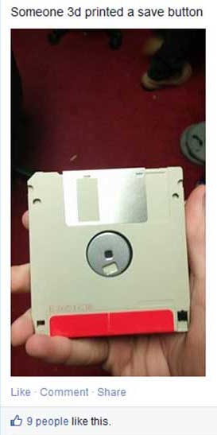
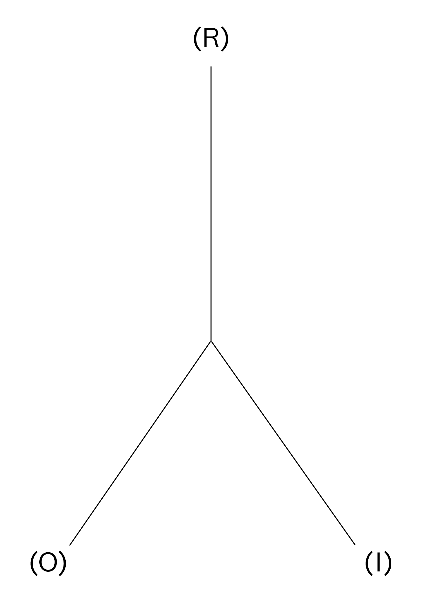
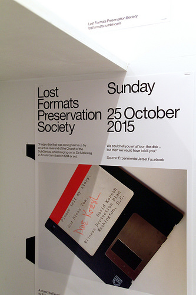

INTRODUCTION
Have you ever realized that the save button on your computer is represented by a tiny depiction of a floppy disk, an object which has become obsolete? Most young children might not even recognize it at all. They have never seen it in real life and certainly never used it for storing their files. They would perceive the floppy disk (the object) as a save button (the icon) which has been 3d-printed. Within a short period of time the floppy disk was replaced by other saving formats like CD-ROMs, USB sticks, hard disks and the Cloud. However, the icon in the Graphical User Interface (GUI) remained a depiction of a floppy disk. As a result the significance of the original object (the floppy disk itself) is replaced by that of the digital significance for people that did not experience the object in its original form.
In my thesis, I explore to what extent the icons are influenced by the physical world, why this is the case (digital literacy), what it means when an icon outlives the object it is based upon and if that has an effect on the real world in return. I will also take a closer look at which visual styles are used to design these icons and symbols and if text or image works better in the case of preventing miscommunication. I will try to define what the role of the graphic designer could be in this process. The main focus of this thesis will be the evolution of significance of interface signs on a screen. It attempts to answer how significance is created for icons and symbols, how they can lose it and when we might need to replace or get rid of them. The life and death of digital signs and when to kill them.

This observation triggered my interest in why interface icons remained stuck in time even though digital developments go faster than ever. Because of the huge amount of time we spend behind our computers and on our smart-phones, GUI icons and symbols have gained a more important role in our daily lives. Huge amounts of data in (unfamiliar) digital spaces are presented to us daily and icons and symbols visualize most of it. This leads me to the research question: In what way does the design of interface icons affect the way we see the (physical) world, and, considering the future, should we re-think their design accordingly?
Found Footage - Unknown Source
In my thesis, I explore to what extent the icons are influenced by the physical world, why this is the case (digital literacy), what it means when an icon outlives the object it is based upon and if that has an effect on the real world in return. I will also take a closer look at which visual styles are used to design these icons and symbols and if text or image works better in the case of preventing miscommunication. I will try to define what the role of the graphic designer could be in this process. The main focus of this thesis will be the evolution of significance of interface signs on a screen. It attempts to answer how significance is created for icons and symbols, how they can lose it and when we might need to replace or get rid of them. The life and death of digital signs and when to kill them.
1) GUI
When the personal computer entered the consumer market in the nineteen-eighties, everything changed. It was (and still is) an instrument of infinite possibilities. A palette of tools which could accommodate nearly any process with immediate results. The computer already existed for a while before the eighties, but because of its difficult to use command line, text-based interfaces could only be used by scientists. When a visual interface was implemented with elements such as icons and symbols they became more accessible and thus the personal computer made it to the general public and quickly became an integral part of our (daily) lives.
At this moment in time, life without computers seems unthinkable. New hardware products such as computers and smart-phones give us access to the huge, growing flow of information on the internet, and new programs and applications (software) are developed for them every day. New and improved digital devices appear on the market faster than ever. To grasp the vast amount of (digital) information we are exposed to, and to manage and control the complex situations in which we find ourselves, Graphical User Interface (GUI) design is becoming progressively more important to all aspects of life.
GUI is made up of a series of elements, a visual language, that evolved to represent information stored in computers. The basic components and most common combination of elements in GUIs on personal computers is known as WIMP (“window, icon, menu, pointing device”). Other well known components are the desktop and the pointer. In this thesis I will focus most on the icons of the GUI because they refer to objects, and this is where my interest in this subject started. Icons in GUI are small pictures that in the case of interfaces represent commands, files, programs or windows on the device. By placing the pointer on an icon and pressing the mouse button, you can execute a command or convert the icon into a window.[2]
We don’t usually take the time to think about it, but we begin learning signs from the time we are children. This is just as true for people of every culture around the world today as it was thousands of years ago. During the evolution of human culture we have given meaning to virtually every object, gesture and living thing you can imagine.
Although sign theories have a long history, Charles Sanders Peirce’s theory is distinctive and innovative for its breadth and complexity, and for capturing the importance of interpretation to signification. Which is why I will use his theory of signs as the base of this thesis. Peirce categorized signs according to three elements: representamen (sign), referent (object) and intrepretant.
1.2.1 SYMBOL
A symbol is a sign that has no resemblance to what it represents. It has meaning because it has been assigned. Symbols simply mean what they mean even though there is no natural relationship between the sign and the object it refers to. It is based on convention and there is no factual link between sign and object. A symbol is arbitrary, unmotivated and constructed and “agreed upon”. In interfaces symbols are gradually becoming more common because people are getting used to being in the digital realm and accept certain images to mean something instead of needing a reference to understand it. Some symbols might seem symbols at first because they are not a literal representation of an object. But they are based on a movement or gesture. For example the upload symbol(or is it an icon?) which is commonly used now (see image) is based on placing something from somewhere onto something else. Loading “up”, so the arrow points upwards. Is a symbol that is based on another symbol or based on something not tangible still a symbol?
1.2.2 INDEX
An index is a sign that is directly connected to what it represents without resembling it. Indexes can be described as a learned, natural association. Based on causality with a physical link between sign and object. A well known example of an indexical sign is smoke as a sign for fire. The index (smoke) indicates without being similar to the thing (fire) itself and without cultural conventions needed to understand it. When looking at it that way, indexical signs cannot exist in digital interfaces because nothing on a computer screen is a natural indicant of anything. Everything is artificial, designed, based on symbolic programming code.
Still, because computers have become such a normal part of our lives, we actually perceive index signs when using digital products. A hot laptop body relates to heavy processor use, and the hum of the laptop indicates a (hard) working hard drive. Indexical signs in the digital world seemed impossible but as we are more used to the digital we assume the symptoms on our screen (interface icons) as real too. When the spinning wait cursor appears it indicates the application is busy, and when the trash icon is bloated we perceive it as full. Actually, in our modern society many other indices are actually not natural either. A red stop-light is a sign to stop your car, a beep from the microwave means the meal is done heating up.
1.2.3 ICON
The third mode is the icon. An icon is a sign that shows a resemblance to, or imitates what it represents (signifies). It is based on similarity between sign and object, it often possesses some of its qualities. [5] The example of the floppy disk I gave in the introduction of this thesis, is an icon. It (the save button) imitates what it represents (the floppy disk on which we then saved our data). Most GUI signs are icons. The choice for icons is often made because of factors such as learnability and recognizability. They are used to simplify complexities of (new) spaces (like street-signs or at airports). The computer and smart-phone are definitely strange new spaces, as they have only existed since the 1980’s. [6] Icons will probably become an even bigger part of our lives, because we will need all the help we can get in the fast changing world we live in.
As a designer (designing more and more for the screen), certain knowledge about signs and how meaning is created for those signs is required. Understanding of when a symbol should be used, and when an icon conveys the right thing in the right context, is an important skill of an effective graphic designer/visual communicator. Designers have to understand basic elements of visual design, technique and media. Be aware of emotional, psychological, and cognitive influences on perception of visuals. And apply them.
At this moment in time, life without computers seems unthinkable. New hardware products such as computers and smart-phones give us access to the huge, growing flow of information on the internet, and new programs and applications (software) are developed for them every day. New and improved digital devices appear on the market faster than ever. To grasp the vast amount of (digital) information we are exposed to, and to manage and control the complex situations in which we find ourselves, Graphical User Interface (GUI) design is becoming progressively more important to all aspects of life.
1.1 WHAT IS GUI
We communicate, work, and spend our free time on our computers, and to do this we also have to communicate with (understand) our computers. The GUI uses the computers graphics capabilities to make a program easier to use and learn. Besides computers, GUIs can be found in objects such as gaming devices, smart-phones, MP3 players and smaller household, office and industrial equipment. The GUI allows the use of visual indicators to interact with electronic devices. It is the opposite of the Command Line Interface (CLI), which means the device only reacts to typed text commands. GUI can be seen as the part between the complex text-based computer language and (most) users. It tries to facilitate computer use regardless of users’ level of expertise. There are several opinions on how to visually achieve the best GUI, which I will elaborate on in chapter 3.2. Even though some people might prefer a textual interface, for the majority of people the GUI (regardless of which visual style) is the most practical way to use a computer. [1]GUI is made up of a series of elements, a visual language, that evolved to represent information stored in computers. The basic components and most common combination of elements in GUIs on personal computers is known as WIMP (“window, icon, menu, pointing device”). Other well known components are the desktop and the pointer. In this thesis I will focus most on the icons of the GUI because they refer to objects, and this is where my interest in this subject started. Icons in GUI are small pictures that in the case of interfaces represent commands, files, programs or windows on the device. By placing the pointer on an icon and pressing the mouse button, you can execute a command or convert the icon into a window.[2]
1.2 THEORY OF SIGNS
A well-known statement about Human Computer Interaction (HCI) is that it is a sign-based process. But signs can actually be anything as long as that thing is interpreted as a sign, so for this thesis I will define what I exactly mean when I talk about signs and name what kind of signs there are according to Charles Sanders Peirce’s theory of signs.We don’t usually take the time to think about it, but we begin learning signs from the time we are children. This is just as true for people of every culture around the world today as it was thousands of years ago. During the evolution of human culture we have given meaning to virtually every object, gesture and living thing you can imagine.
“We think only in signs"
Over time, the world has become saturated with signs. Modern humans have the ability to interpret, evaluate, and infer meaning from information presented (visually). How a sign is ‘read’ depends on the visual codes and conventions that are embedded in the society of the person who is ‘reading’ the sign.Charles Sanders Peirce (1839-1914) [3]
Although sign theories have a long history, Charles Sanders Peirce’s theory is distinctive and innovative for its breadth and complexity, and for capturing the importance of interpretation to signification. Which is why I will use his theory of signs as the base of this thesis. Peirce categorized signs according to three elements: representamen (sign), referent (object) and intrepretant.

By examining their relationship and, in particular, the way the referent determines the sign, Peirce also distinguished three main ‘modes’ into which signs can be assigned: symbol, icon and index. All three modes defined by Pierce have different levels of conventionality, predictability and conformity. [4] Sign Triad - Charles Sanders Pierce (R)epresentamen, (O)bject, (I)nterpretant
1.2.1 SYMBOL
A symbol is a sign that has no resemblance to what it represents. It has meaning because it has been assigned. Symbols simply mean what they mean even though there is no natural relationship between the sign and the object it refers to. It is based on convention and there is no factual link between sign and object. A symbol is arbitrary, unmotivated and constructed and “agreed upon”. In interfaces symbols are gradually becoming more common because people are getting used to being in the digital realm and accept certain images to mean something instead of needing a reference to understand it. Some symbols might seem symbols at first because they are not a literal representation of an object. But they are based on a movement or gesture.
Upload - Apple GUI
1.2.2 INDEX
An index is a sign that is directly connected to what it represents without resembling it. Indexes can be described as a learned, natural association. Based on causality with a physical link between sign and object. A well known example of an indexical sign is smoke as a sign for fire. The index (smoke) indicates without being similar to the thing (fire) itself and without cultural conventions needed to understand it. When looking at it that way, indexical signs cannot exist in digital interfaces because nothing on a computer screen is a natural indicant of anything. Everything is artificial, designed, based on symbolic programming code.
Still, because computers have become such a normal part of our lives, we actually perceive index signs when using digital products. A hot laptop body relates to heavy processor use, and the hum of the laptop indicates a (hard) working hard drive. Indexical signs in the digital world seemed impossible but as we are more used to the digital we assume the symptoms on our screen (interface icons) as real too. When the spinning wait cursor appears it indicates the application is busy, and when the trash icon is bloated we perceive it as full. Actually, in our modern society many other indices are actually not natural either. A red stop-light is a sign to stop your car, a beep from the microwave means the meal is done heating up.
1.2.3 ICON
The third mode is the icon. An icon is a sign that shows a resemblance to, or imitates what it represents (signifies). It is based on similarity between sign and object, it often possesses some of its qualities. [5] The example of the floppy disk I gave in the introduction of this thesis, is an icon. It (the save button) imitates what it represents (the floppy disk on which we then saved our data). Most GUI signs are icons. The choice for icons is often made because of factors such as learnability and recognizability. They are used to simplify complexities of (new) spaces (like street-signs or at airports). The computer and smart-phone are definitely strange new spaces, as they have only existed since the 1980’s. [6] Icons will probably become an even bigger part of our lives, because we will need all the help we can get in the fast changing world we live in.
As a designer (designing more and more for the screen), certain knowledge about signs and how meaning is created for those signs is required. Understanding of when a symbol should be used, and when an icon conveys the right thing in the right context, is an important skill of an effective graphic designer/visual communicator. Designers have to understand basic elements of visual design, technique and media. Be aware of emotional, psychological, and cognitive influences on perception of visuals. And apply them.
2) MY OBSERVATION
The observation I have made in my surroundings, starting with the floppy perceived as a 3D-printed save button incident, is that more icons often do not refer to the intended, represented object anymore. All digital design is to some extent a game of metaphor and illusion. Yet, increasingly, some of the objects being gestured towards are vanishing from users’ remembered experience. Will the youngest generation of the newest digital device users ever physically dialled a phone, used a desktop calendar or yellowed paper notepads? [7] This made me question what it means for an icon to (physically) resemble something, and if icons that refer to something that has become obsolete are still icons or if they lose their significance completely? Are there icons that will always work? Why are icons not changed along with the changes of the objects they represent?
There are also icons that change(d) along with the (technological) developments and replacements in real life, and maybe even icons that changed before the object changed. Of course there are also icons that are used in specific programs that are recognizable to some (that know the program in real life or digitally) but not to others. In the future, there might also be icons with no similar real life object, because they will be based on something artificial or non-existent. There are also icons that are combined with symbols, like the email icon with the @ on top of it, which is a story all on its own. And last but not least there are icons that are developed into or replaced by symbols.
A great example which shows the fast evolution of data storage formats is created by Graphic Design studio Experimental Jetset. Its called ‘Lost Formats Preservation Society”. They realized (in 2000!) that formats were disappearing. In their explanation of the project they mentioned that there once was a time when every format contained its own specific data, while nowadays the CD-ROM format is capable of containing all data, and even the CD-ROM is slowly disappearing. The sole purpose of their project was to save formats from obscurity and create a monument to obsolete formats. [9]
We replace (physical) formats so often that they seem to disappear even before they exist. They undergo a fast evolution, which in the future might go even faster. Icons based on these objects apparently can’t or will not keep up with the fast changes, even though GUIs are often updated. Important to note is that the icons often only change in style, not in which artefact they depict. The icons stay stuck in time, and gain either a nostalgic feeling to people that remember the original function, or lose their significance and only are seen as their digital version. [10] This different level of understanding is based on the design choices as well as the amount someone is used to computers in their life. This is explained in three levels of digital literacy in the next chapter.
2.1 SCOPE OF SIGNS
With these questions in mind I realized that there are many different kinds of icons and symbols and even combinations of the two, which often is kind of contradictory. Apart from the icons that refer to a physical object, which has become (or may become) obsolete, there is also the possibility that icons have a physical equivalent that will always exist. Things like the trashcan or time/clock will probably never become obsolete or at least take a long (very long) time to change into something else or even disappear. Icons based on those kind of objects will only change in style, but it doesn’t matter if they still refer to the objects because that doesn’t change.There are also icons that change(d) along with the (technological) developments and replacements in real life, and maybe even icons that changed before the object changed. Of course there are also icons that are used in specific programs that are recognizable to some (that know the program in real life or digitally) but not to others. In the future, there might also be icons with no similar real life object, because they will be based on something artificial or non-existent. There are also icons that are combined with symbols, like the email icon with the @ on top of it, which is a story all on its own. And last but not least there are icons that are developed into or replaced by symbols.
2.2 ADDICTION TO THE NEW
One of the main reasons, I realized during my research into this topic, that icons refer to obsolete objects is often the result of the current addiction to the ‘new’ people seem to have. The attention-span of the general computer user is shorter than ever. We live in the Information age, which means there is an overload of information as well as devices we receive and make this information with. In a relatively short amount of time technological developments accelerated which resulted in a tendency to replace existing formats with better, newer models faster than ever before. We want to revamp, restyle, improve, update, replace everything we have as soon as there is a newer version available. Marketers react to and create this need by putting new products on the market faster and faster.[8]A great example which shows the fast evolution of data storage formats is created by Graphic Design studio Experimental Jetset. Its called ‘Lost Formats Preservation Society”. They realized (in 2000!) that formats were disappearing. In their explanation of the project they mentioned that there once was a time when every format contained its own specific data, while nowadays the CD-ROM format is capable of containing all data, and even the CD-ROM is slowly disappearing. The sole purpose of their project was to save formats from obscurity and create a monument to obsolete formats. [9]

On every new digital device there are often also new (updated) Graphical User Interfaces. After finding the example of the floppy disk I realized that in many of those (new, updated) GUIs there still are icons that refer to objects that are not used anymore. Why don’t the icons change along with the changes of the artefacts to prevent younger generations from only knowing the objects through their screen? If, like Experimental Jetset said, objects are disappearing, why do icons refer to them? As long as objects change and the icons using them as reference don’t, digital depictions will become more familiar than the real objects. Experimental Jetset - ‘Lost Formats Preservation Society
We replace (physical) formats so often that they seem to disappear even before they exist. They undergo a fast evolution, which in the future might go even faster. Icons based on these objects apparently can’t or will not keep up with the fast changes, even though GUIs are often updated. Important to note is that the icons often only change in style, not in which artefact they depict. The icons stay stuck in time, and gain either a nostalgic feeling to people that remember the original function, or lose their significance and only are seen as their digital version. [10] This different level of understanding is based on the design choices as well as the amount someone is used to computers in their life. This is explained in three levels of digital literacy in the next chapter.
3) INTERPRETATION
There are different levels of understanding a computers, based on the amount of experience one has with them; the amount of digital literacy they have. Knowing these audiences is an important factor when designing (icons and symbols) on/for/about the screen. These three levels of expertise, influence the way icons are perceived, used and thus designed. Keep in mind these are really strict divisions, which will probably be different per person and overlap and change over time.
3.1.1 Naives
When computer users were not familiar with computers and thus Graphical User Interfaces (GUI) and it was all still new, they were confronted with iconic representations of files, printers, trash-cans on their computer screens. They perceived those icons to be representations of the real artefacts as those were the only thing they knew before. They consciously replaced the digital, symbolic code with these visual metaphors. The digital naives are GUI users that have little experience with computers. For them the words ‘files’ and ‘folders’ stand for physical objects. They understand the icons as metaphors, that are there to help them to use computers.
3.1.2 Native
The digital native on the other hand grew up with digital products. In 2001 Prensky introduced the term Digital Natives to describe a new generation of users who “have spent their entire lives surrounded by and using computers, video-games, digital music players, video-cams, cell phones, and all the other toys and tools of the digital age. They use these tools as extensions of their bodies and minds, fluidly incorporating them into their daily routines.” [11] They do not conceive the computer model and it’s icons as a representation of a physical office with files and a trash-can like the Digital Naives.
There is a big chance that before they knew the corresponding representations on screen they were unaware of (most) objects the icons refer to, especially the physical objects that were used as reference points around the time the first GUI was introduced. This depends on their age. For them, because of the lack of knowing the original depicted objects, it is difficult/impossible to construct any similarity so to them the icons are just arbitrary symbols. Children today grow up simultaneously in the ‘real’ world and in the digital world, the border between the two becomes smudged and as good as non-existent. At this moment in time there already is a second generation of digital natives, who experience this divide between digital and analogue even less. To them swiping might feel more natural than peeling an orange. And a save button will certainly feel more familiar than a floppy disk.
New research pointed out that, while kids are becoming more and more tech reliant, it does not necessarily mean these Digital Natives are becoming tech savvy. Prensky thought being a digital native meant being very good at handling digital devices but he modified his position and realised Natives can also be kind of naive. People that grow up immersed in digital technology don’t necessarily live up to the things Prensky thought the Digital Natives would be. Prensky now accepts that through their experience with technology, older people may be digital natives. Yet, Prensky still claims the divide between the old and the young continues to be perpetuated. [12]
3.1.3 Immigrant
In addition, there are also digital immigrants who were not born in the digital era and did not grow up with digital technology but have (wanted to) embraced it. Digital Immigrants still try and work around or second guess technology, while the Digital Natives know no other way. At first they might conceive icons the same way as Digital Naive. If the digital model stays consistent over long periods of time, signs go from being consciously conceived as representations of something, to semi-natural signs. Interface signs can be perceived more and more like they are perceived by Digital Natives. [13] It goes without saying that digital literacy is something that counts only for people who have access to a computer. This means that there is a chance there will always be Digital Naives when the person in question has never had the possibility to use computer before, or never will. In the case of the western world it is unlikely that someone has never used or never seen a computer. [14]
The use of visual metaphors and similarity to physical objects were useful to adjust to the new spaces the digital realm presented. This visual style, known as a combination of skeuomorphism and realism, was a valuable tool to help people understand digital interfaces. Steve Jobs advocated this visual style because of its learnability factor. [16] Making otherwise unclear interactions look physical and realistic made them familiar and easier to use for the Digital Naive. It was (and still is) used as a sort of guidepost in the unknown digital world although there are is an ongoing discussion about this subject. Otherwise difficult to understand functions seem clearer because they are similar to the function they have in real life (the only life they know). So it doesn’t need (much) explanation.
3.2.1 Skeuomorphism
In the Oxford Dictionary a skeuomorph is defined as ‘an object or feature which imitates the design of a similar artefact made from another material’, or for the domain of ‘computing’: ‘an element of a graphical user interface which mimics a physical object’. [17] The term, which was already used in archaeology before it was used to describe interface design is now frequently used to describe (discredit) the realistic visual style Apple first implemented in its interface (which is a combination of realism and skeuomorphism). Skeuomorphism means designing a tool in a new medium(digital) that incorporates some of the features of its antecedents. These no longer perform any specific function but forge an intuitive link with the past, not to mention being (hopefully) attractive as a visual style. There are visual and non-visual skeuomorphs. When speaking about skeumorphs people often mean (only) the visual implementation, when Web and UI icons seem 3D even though they are on a flat surface by applying effects such as shadowing, highlights and mimicking real-world materials. Non-visual skeuomorphs refer to things that refer to real-world things without looking like them (necessarily) like the use of shutter sounds used when taking a picture with a digital camera. [18]
3.2.2 Realism
Realism is defined in the Oxford Dictionary as ‘an artistic or literary movement or style characterized by the representation of people or things as they actually are’. [19] Realism is often purely visual and tries to imitate real-world materials and textures, whereas skeuomorphism goes deeper than just the visual aspects of design and is (more) about a digital program functioning the same way as a physical object, like the turning of a page being mimicked in digital reading (e-books). Realism often is skeuomorphic so the realism aspects make sense. And skeuomorphism often tends to look realistic to make the connection with the real object clear. It should be noted that other design than realistic design can also be skeuomorphic. When talking about the design choices Apple implemented in their GUI at the beginning often only the term Skeuomorphism is used. It then means that with effects such as 3D, drop shadow, mimicking fabrics, stitched leather, wooden shelves, paper or metal the interface tries to be as realistic as possible.
This style, Skeuomorphism/realism, was really used to its full extent, when the technical constraints of the screen of the smart-phone opened up possibilities for icon design. The touch-screen was designed to be used with your finger, rather than with a stylus. This meant the targets had to be at least 44 by 44 pixels. Previous smart-phones were cramped and included a lot of lists and small icons which made it impossible to get detailed with graphics. Bigger touch targets means more possibilities for the surface, a bigger playground for Skeumorphism. [20]
Although Digital Naives might still need Skeuomorphism as it gives them a reference point, and they are used to and like the style, Digital Natives do not necessarily need it for the reference. For them knowledge does not have to be transferred from analogue to digital, their reference point is in other digital interfaces. Obvious metaphors seem unnecessary. But it doesn’t mean they can’t prefer the style, because they are used to it or because they enjoy the details.
Skeuomorphism and realism now have a negative taste to it in a big part of the design community. Although learnability was and is a valid reason to think visual metaphors are useful, designers criticize the visual feel of the realistic looking icons and other features. Whereas it at first (and as I’ve mentioned before it still is to some people) was seen as rich and unique style, many now think it’s dated (ugly), not practical and not space efficient. User interface designer Sacha Greif thinks the decision to launch the iPhone with such a textured, “realistic” interface was a sensible move given the fact the device was so new in 2007. “Nobody,” he argues, “had seen such visual richness in an operating system’s user interface before (let alone on a phone)... Realism was a way to link the future with the past, and make people feel at ease with their new device.” [21] On the other hand author and tech design consultant Adam Greenfield thinks there is no reason for Apple to have filled its exquisite devices with “the most awful and mawkish and flat-out tacky visual cues”. And software developer James Higgs has bluntly described it as “horrific, dishonest and childish crap.” [22]
3.2.2 FLAT DESIGN
Like every style/trend, people became used to skeumorphism, it became the ‘normal’, the ‘old’ and then we want something new to replace it. Therefore, when Microsoft introduced its Windows Phone in 2010 designed in a flat, colourful and abstract style, it was applauded and celebrated by most designers. Apple soon followed this approach. Drop shadows, bevel and fake leather were no more. This ‘new’ interface trend is called Flat design as it only employs solid colours, clear typography, and is very minimalistic. Flat design is primarily influenced by the International Typographic Style (also known as Swiss Style) and Modernism. Although the International Typographic style emerged during the 1950s and 1960s and was not used in the digital sense then at all, it is regarded as the starting point of and main influence on the Flat design that is applied in digital interfaces now. [23]
Flat design is a style of interface design using the least amount of stylistic elements that give the illusion of three dimensions as possible. Designers and people in general may prefer flat design because it is streamlined and efficient. It is easier to quickly convey information while still looking visually appealing and approachable. Additionally, it makes it easier to design an interface that is responsive to changes in browser size across different devices, because it is mainly based on Cascading Style Sheets (CSS), not images. The minimal design elements ensure that websites and applications are able to load faster and resize easily, and still look sharp on high-definition screens. A problem could be that Digital Naives might have a difficulty understanding a flat-designed button. And will a flat button do the same job as a bevelled one for second generation natives and assimilated immigrants? With the implementation of flat design a lot of icons were replaced by symbols because they fit better within the Flat style. [24]
As a design approach, Flat design is often contrasted to Skeuomorphism. But the subject of simple, clean design versus detailed, realistic design is not new. Paul Rand (and many others) wrote about a similar subject in his article Logos, Flags, and Escutcheons in 1991: “The role of the logo is to point, to designate—in as simple a manner as possible. A design that is complex, like a fussy illustration or an arcane abstraction, harbors a self-destruct mechanism. Simple ideas, as well as simple designs are, ironically, the products of circuitous mental purposes. Simplicity is difficult to achieve, yet worth the effort. The effectiveness of a good logo depends on: A) distinctiveness B) visibility C) usability D) memorability E) universality F) durability G) timelessness” [25]
In his article Rand pleas for simplicity which could be compared to Flat design in interfaces. It seems like the discussion for detailed and elaborate versus simple and clean is an issue which repeats itself over time, and depends mostly on personal preference and taste. To me it seems more about which style is trending than which style functions better. Trend forecasting collective K-Hole wrote about a similar subject in their article: “Youth Mode: A report on Freedom”. They coin the term ‘Normcore’ which stands for a general attitude: embracing sameness deliberately as a new way of being cool, rather than striving for “difference” or “authenticity.” [26] Even though they use it more in the fashion clothing sense (ordinary, blank clothes), it is applicable to more than only that. The “normcore” trend has been interpreted as a reaction to fashion over-saturation resulting from ever faster-changing fashion trends. [27] The current tendency to prefer Flat design is the ‘Normcore’ of the interfaces.
What bothers me about the discussions is that they often only discuss which visual style is ‘better’, flat or realistic design. Or in the case of Normcore style: plain and simple versus authentic and personal. However, the discussion of interface design doesn’t go into whether icons should refer to (obsolete) objects at all. I noticed abstracted flat icons often still refer to (the same) physical artefacts as the skeuomorphic icons. They just look less like the artefacts, use less effects to imitate them exactly, but still have the physical artefact as a reference. They still will cause confusion (although maybe less). Even though flat design is a newer updated style and it claims to be (more) timeless (just like the logos by Paul Rand), the flat icons are still sort of stuck in time. The flat icons just as the skeuomorphic icons don’t change according to the developments around us.
Although I think style has little to no influence on learnability in this case, I do think it can have an influence on the way we see the physical world, but in a different way than the floppy disk example. Changing the design of icons from Skeuomorphic to Flat could influence the way we would ideally like to see the real thing. If the referred object stays the same (for instance a clock) but the icon becomes very flat and abstracted, it could have as a result that we want the object to become more abstracted as well. The way the digital depiction of a clock looks influences the way a clock itself in real life could look. The aesthetics of the digital will be projected onto reality.
Maybe we should treat icons with this knowledge in mind. Accept that they undergo trends. By knowing and accepting this, we can go beyond the discussion of trends and focus more on the fact if they are even useful at all. Are objects that become obsolete worth depicting when re-designing an icon. Maybe we should change the whole idea, and attitude towards icons, not only the visual part.
John Berger said, “An image is a sight which has been recreated or reproduced . . . which has been detached from the place and time in which it first made its appearance . . .” This detachment can be great or small, but all images, including icons, involve a way of seeing by the person who has created the image. And, when we look at an image created by someone else, our understanding of it depends on our way of seeing. Berger argues that images were first made to represent something that was not there, and later acquired an extra level of meaning by lasting longer than the original subject. The image now showed how the subject had once looked to other people. [28]
3.1 DIGITAL LITERACIES
In the following chapter I will explain three levels of users, and how they understand and use digital products according to Prensky’s explanation.3.1.1 Naives
When computer users were not familiar with computers and thus Graphical User Interfaces (GUI) and it was all still new, they were confronted with iconic representations of files, printers, trash-cans on their computer screens. They perceived those icons to be representations of the real artefacts as those were the only thing they knew before. They consciously replaced the digital, symbolic code with these visual metaphors. The digital naives are GUI users that have little experience with computers. For them the words ‘files’ and ‘folders’ stand for physical objects. They understand the icons as metaphors, that are there to help them to use computers.
3.1.2 Native
The digital native on the other hand grew up with digital products. In 2001 Prensky introduced the term Digital Natives to describe a new generation of users who “have spent their entire lives surrounded by and using computers, video-games, digital music players, video-cams, cell phones, and all the other toys and tools of the digital age. They use these tools as extensions of their bodies and minds, fluidly incorporating them into their daily routines.” [11] They do not conceive the computer model and it’s icons as a representation of a physical office with files and a trash-can like the Digital Naives.
There is a big chance that before they knew the corresponding representations on screen they were unaware of (most) objects the icons refer to, especially the physical objects that were used as reference points around the time the first GUI was introduced. This depends on their age. For them, because of the lack of knowing the original depicted objects, it is difficult/impossible to construct any similarity so to them the icons are just arbitrary symbols. Children today grow up simultaneously in the ‘real’ world and in the digital world, the border between the two becomes smudged and as good as non-existent. At this moment in time there already is a second generation of digital natives, who experience this divide between digital and analogue even less. To them swiping might feel more natural than peeling an orange. And a save button will certainly feel more familiar than a floppy disk.
New research pointed out that, while kids are becoming more and more tech reliant, it does not necessarily mean these Digital Natives are becoming tech savvy. Prensky thought being a digital native meant being very good at handling digital devices but he modified his position and realised Natives can also be kind of naive. People that grow up immersed in digital technology don’t necessarily live up to the things Prensky thought the Digital Natives would be. Prensky now accepts that through their experience with technology, older people may be digital natives. Yet, Prensky still claims the divide between the old and the young continues to be perpetuated. [12]
3.1.3 Immigrant
In addition, there are also digital immigrants who were not born in the digital era and did not grow up with digital technology but have (wanted to) embraced it. Digital Immigrants still try and work around or second guess technology, while the Digital Natives know no other way. At first they might conceive icons the same way as Digital Naive. If the digital model stays consistent over long periods of time, signs go from being consciously conceived as representations of something, to semi-natural signs. Interface signs can be perceived more and more like they are perceived by Digital Natives. [13] It goes without saying that digital literacy is something that counts only for people who have access to a computer. This means that there is a chance there will always be Digital Naives when the person in question has never had the possibility to use computer before, or never will. In the case of the western world it is unlikely that someone has never used or never seen a computer. [14]
3.2 VISUAL STYLE
When the first computers were introduced, everyone was a Digital Naive because nobody had previous experience with them. After a few first attempts to bring the computer to the general commercial public but without going beyond the text-based interface, at the end of the 1970s and beginning of 1980s Apple implemented visual metaphors in their GUI design. They redefined the way we interact with computers. On the Mac OS1 virtual desktops referred to physical desktops and digital files looked like paper files. Or at least they tried to. Computers were limited in resolution and colour. The goal was to make the interface resemble materials and/or shape of actual physical artefacts and look as realistic as possible, but the screens didn’t allow for much detail so they actually look like abstract symbol-like designs, even though they attempted to resemble the real thing as much as possible.[15]The use of visual metaphors and similarity to physical objects were useful to adjust to the new spaces the digital realm presented. This visual style, known as a combination of skeuomorphism and realism, was a valuable tool to help people understand digital interfaces. Steve Jobs advocated this visual style because of its learnability factor. [16] Making otherwise unclear interactions look physical and realistic made them familiar and easier to use for the Digital Naive. It was (and still is) used as a sort of guidepost in the unknown digital world although there are is an ongoing discussion about this subject. Otherwise difficult to understand functions seem clearer because they are similar to the function they have in real life (the only life they know). So it doesn’t need (much) explanation.
3.2.1 Skeuomorphism
In the Oxford Dictionary a skeuomorph is defined as ‘an object or feature which imitates the design of a similar artefact made from another material’, or for the domain of ‘computing’: ‘an element of a graphical user interface which mimics a physical object’. [17] The term, which was already used in archaeology before it was used to describe interface design is now frequently used to describe (discredit) the realistic visual style Apple first implemented in its interface (which is a combination of realism and skeuomorphism). Skeuomorphism means designing a tool in a new medium(digital) that incorporates some of the features of its antecedents. These no longer perform any specific function but forge an intuitive link with the past, not to mention being (hopefully) attractive as a visual style. There are visual and non-visual skeuomorphs. When speaking about skeumorphs people often mean (only) the visual implementation, when Web and UI icons seem 3D even though they are on a flat surface by applying effects such as shadowing, highlights and mimicking real-world materials. Non-visual skeuomorphs refer to things that refer to real-world things without looking like them (necessarily) like the use of shutter sounds used when taking a picture with a digital camera. [18]
3.2.2 Realism
Realism is defined in the Oxford Dictionary as ‘an artistic or literary movement or style characterized by the representation of people or things as they actually are’. [19] Realism is often purely visual and tries to imitate real-world materials and textures, whereas skeuomorphism goes deeper than just the visual aspects of design and is (more) about a digital program functioning the same way as a physical object, like the turning of a page being mimicked in digital reading (e-books). Realism often is skeuomorphic so the realism aspects make sense. And skeuomorphism often tends to look realistic to make the connection with the real object clear. It should be noted that other design than realistic design can also be skeuomorphic. When talking about the design choices Apple implemented in their GUI at the beginning often only the term Skeuomorphism is used. It then means that with effects such as 3D, drop shadow, mimicking fabrics, stitched leather, wooden shelves, paper or metal the interface tries to be as realistic as possible.
This style, Skeuomorphism/realism, was really used to its full extent, when the technical constraints of the screen of the smart-phone opened up possibilities for icon design. The touch-screen was designed to be used with your finger, rather than with a stylus. This meant the targets had to be at least 44 by 44 pixels. Previous smart-phones were cramped and included a lot of lists and small icons which made it impossible to get detailed with graphics. Bigger touch targets means more possibilities for the surface, a bigger playground for Skeumorphism. [20]
Although Digital Naives might still need Skeuomorphism as it gives them a reference point, and they are used to and like the style, Digital Natives do not necessarily need it for the reference. For them knowledge does not have to be transferred from analogue to digital, their reference point is in other digital interfaces. Obvious metaphors seem unnecessary. But it doesn’t mean they can’t prefer the style, because they are used to it or because they enjoy the details.
Skeuomorphism and realism now have a negative taste to it in a big part of the design community. Although learnability was and is a valid reason to think visual metaphors are useful, designers criticize the visual feel of the realistic looking icons and other features. Whereas it at first (and as I’ve mentioned before it still is to some people) was seen as rich and unique style, many now think it’s dated (ugly), not practical and not space efficient. User interface designer Sacha Greif thinks the decision to launch the iPhone with such a textured, “realistic” interface was a sensible move given the fact the device was so new in 2007. “Nobody,” he argues, “had seen such visual richness in an operating system’s user interface before (let alone on a phone)... Realism was a way to link the future with the past, and make people feel at ease with their new device.” [21] On the other hand author and tech design consultant Adam Greenfield thinks there is no reason for Apple to have filled its exquisite devices with “the most awful and mawkish and flat-out tacky visual cues”. And software developer James Higgs has bluntly described it as “horrific, dishonest and childish crap.” [22]
3.2.2 FLAT DESIGN
Like every style/trend, people became used to skeumorphism, it became the ‘normal’, the ‘old’ and then we want something new to replace it. Therefore, when Microsoft introduced its Windows Phone in 2010 designed in a flat, colourful and abstract style, it was applauded and celebrated by most designers. Apple soon followed this approach. Drop shadows, bevel and fake leather were no more. This ‘new’ interface trend is called Flat design as it only employs solid colours, clear typography, and is very minimalistic. Flat design is primarily influenced by the International Typographic Style (also known as Swiss Style) and Modernism. Although the International Typographic style emerged during the 1950s and 1960s and was not used in the digital sense then at all, it is regarded as the starting point of and main influence on the Flat design that is applied in digital interfaces now. [23]
Flat design is a style of interface design using the least amount of stylistic elements that give the illusion of three dimensions as possible. Designers and people in general may prefer flat design because it is streamlined and efficient. It is easier to quickly convey information while still looking visually appealing and approachable. Additionally, it makes it easier to design an interface that is responsive to changes in browser size across different devices, because it is mainly based on Cascading Style Sheets (CSS), not images. The minimal design elements ensure that websites and applications are able to load faster and resize easily, and still look sharp on high-definition screens. A problem could be that Digital Naives might have a difficulty understanding a flat-designed button. And will a flat button do the same job as a bevelled one for second generation natives and assimilated immigrants? With the implementation of flat design a lot of icons were replaced by symbols because they fit better within the Flat style. [24]
As a design approach, Flat design is often contrasted to Skeuomorphism. But the subject of simple, clean design versus detailed, realistic design is not new. Paul Rand (and many others) wrote about a similar subject in his article Logos, Flags, and Escutcheons in 1991: “The role of the logo is to point, to designate—in as simple a manner as possible. A design that is complex, like a fussy illustration or an arcane abstraction, harbors a self-destruct mechanism. Simple ideas, as well as simple designs are, ironically, the products of circuitous mental purposes. Simplicity is difficult to achieve, yet worth the effort. The effectiveness of a good logo depends on: A) distinctiveness B) visibility C) usability D) memorability E) universality F) durability G) timelessness” [25]
In his article Rand pleas for simplicity which could be compared to Flat design in interfaces. It seems like the discussion for detailed and elaborate versus simple and clean is an issue which repeats itself over time, and depends mostly on personal preference and taste. To me it seems more about which style is trending than which style functions better. Trend forecasting collective K-Hole wrote about a similar subject in their article: “Youth Mode: A report on Freedom”. They coin the term ‘Normcore’ which stands for a general attitude: embracing sameness deliberately as a new way of being cool, rather than striving for “difference” or “authenticity.” [26] Even though they use it more in the fashion clothing sense (ordinary, blank clothes), it is applicable to more than only that. The “normcore” trend has been interpreted as a reaction to fashion over-saturation resulting from ever faster-changing fashion trends. [27] The current tendency to prefer Flat design is the ‘Normcore’ of the interfaces.
What bothers me about the discussions is that they often only discuss which visual style is ‘better’, flat or realistic design. Or in the case of Normcore style: plain and simple versus authentic and personal. However, the discussion of interface design doesn’t go into whether icons should refer to (obsolete) objects at all. I noticed abstracted flat icons often still refer to (the same) physical artefacts as the skeuomorphic icons. They just look less like the artefacts, use less effects to imitate them exactly, but still have the physical artefact as a reference. They still will cause confusion (although maybe less). Even though flat design is a newer updated style and it claims to be (more) timeless (just like the logos by Paul Rand), the flat icons are still sort of stuck in time. The flat icons just as the skeuomorphic icons don’t change according to the developments around us.
Although I think style has little to no influence on learnability in this case, I do think it can have an influence on the way we see the physical world, but in a different way than the floppy disk example. Changing the design of icons from Skeuomorphic to Flat could influence the way we would ideally like to see the real thing. If the referred object stays the same (for instance a clock) but the icon becomes very flat and abstracted, it could have as a result that we want the object to become more abstracted as well. The way the digital depiction of a clock looks influences the way a clock itself in real life could look. The aesthetics of the digital will be projected onto reality.
Maybe we should treat icons with this knowledge in mind. Accept that they undergo trends. By knowing and accepting this, we can go beyond the discussion of trends and focus more on the fact if they are even useful at all. Are objects that become obsolete worth depicting when re-designing an icon. Maybe we should change the whole idea, and attitude towards icons, not only the visual part.
John Berger said, “An image is a sight which has been recreated or reproduced . . . which has been detached from the place and time in which it first made its appearance . . .” This detachment can be great or small, but all images, including icons, involve a way of seeing by the person who has created the image. And, when we look at an image created by someone else, our understanding of it depends on our way of seeing. Berger argues that images were first made to represent something that was not there, and later acquired an extra level of meaning by lasting longer than the original subject. The image now showed how the subject had once looked to other people. [28]
4) IMAGE vs TEXT
Our modern fast-paced world seems to ask for streamlined, simple (visual) solutions to express and communicate complex emotions and situations, but currently the amount of signs is impossibly large, objects are becoming obsolete faster than ever and signs might create more ambiguity and misunderstanding than clarity which was the main reason for them in the first place. Are there other solutions?
On one side people say GUI makes computers user-friendly, but on the other hand people think GUI means the OS is dumbed down and will result in users not probing below the surface. They will accept the simplicity of the icons and symbols and will not look/learn further. Sherry Turkle explains in her article ‘The Way Computers Change the Way We Think’: “We expect software to be easy to use, and we assume that we don’t have to know how a computer works. Macintosh users began to use the term ‘transparency’ when they talked about seeing their documents and programs represented by attractive and easy-to-interpret icons. They were referring to an ability to make things work without needing to go below the screen surface. Today, when people say that something is transparent, they mean that they can see how to make it work, not that they know how it works. In other words, transparency means epistemic opacity.” [29]
What Turkle means is that the people who either built or bought the first generation of personal computers, understood their operating system down to the bits and bytes. The operating systems became more complex, but still people tried to understand their computers completely. However contemporary information technology encourages a different kind of dealing with understanding of these complex systems. Turkle thinks people take things at (inter)face value.
Although icons might now be central to Graphical User Interfaces and they connect user with computer, text can (and often has to) provide more specific information about an icon or needs to be used in stead of an icon. Ellen Lupton wrote: “Designers hailed pictures as universal language in the 20th century. Yet in the age of code, text has become a more common denominator than images, as text is searchable, translatable and capable of being reformatted and restyled for alternative or future media.” [30]
Other opinions about GUI versus CLI are that CLI gives the user more control and options, but supporters of GUI think CLI is ‘prehistoric’ and makes them think (and fear) the moment will return when only scientists and technical wizards could use a computer. Both sides think using their preferred interface is faster. GUI is faster because picking and choosing icons is easier than remembering and typing command lines. But for CLI you only need a keyboard and that beats clicking, scrolling, typing, clicking, scrolling, etc. [31]
I think both sides have a point, which leads me to the third option: using them both together. As mentioned before, image and words often help each other. CLI and GUI combined can achieve great things that either of them alone can’t. People’s strong affection for one and rejection towards the other seems to be more psychological than technical. So the truth, as it usually is, lies in between. CLI and GUI are both essentially complementary modes of interacting with the computer. CLI is generally easier if you can remember the commands and the options, which is the case if you (need to) use it a lot. If you don’t use certain functions often, a nice GUI can help you find them quickly. Whenever you have to repeat a command many times you could of course automate the process by writing a script, but in theory you could link that script to a button or menu item in a GUI, so it doesn’t have to stay at the command line.
Before GUI or CLI there were already many artists and graphic designers who explored the subject of image instead of text or as an addition to text. One of the most famous examples is that of Otto Neurath (1882-1945) who wrote in 1931 in the German teacher’s journal Die Volksschule: “Finally it should be noted that the picture education, especially the pictorial statistics, are of international importance. Words carry more emotional elements than set pictures, which can be observed by people of different countries, different parties without any protest; Words divide, pictures unite.” [32]
Neurath’s well known slogan (“words divide, pictures unite”), has been extensively used and repeated. It claims the superiority of pictorial languages over verbal languages. Neurath created a method of pictorial statistics which was a useful tool to transmit rational information across barriers of class, culture and education. The International System of Typographic Picture Education (shortened to Isotype) system was a visual program for displaying facts and quantitative information with visual education as its prime motive. A “world language without words” that would not only enhance education but facilitate international understanding.
Although his system implies images were better than words ISOTYPE was not intended to replace verbal language, rather it was a “helping language” accompanied by verbal elements.[33]
Another interesting, more contemporary attempt which challenges image above text, was created by a Chinese artist Xu Bing. It is called “Book from the Ground” and presents itself as a new graphic novel and claims to be a book that anyone can read. Its composed entirely of symbols and icons that are universally understood. Xu Bing spent seven years gathering materials, experimenting, revising, and arranging thousands of pictograms to construct the narrative of Book from the Ground. The result is a readable story without words. Anyone with experience in contemporary life, who has internalized icons and logos of modernity can understand it. But during the process of making this book he realized that there are limits to writing with icons. Abstract concepts are impossible to explain in (only) icons. For now Emoji (and other icons) are mostly understandable when used as an addition to text, though even then there is a lot of miscommunication. [34] So in a way Xu Bing has come to the same conclusion as Neurath (and me). Both of their opinions seem very valid to me; why choose only one of the two (image or text) if both of them are available and useful together.
Research into “brain-computer interfaces”, “emotionally intelligent” interfaces and “tangible computing” are already taking place although they are generally not applied to interfaces yet. These systems rely on other things than the standard interfaces we know now when interacting with computers.Things like eye-tracking, monitoring stress levels to filter e-mails and using physical “things” rather than special input devices are part of the current research. Most of these systems try to make interfaces invisible. So no (or few) interface icons or symbols would be needed in the same way they are now.
“The mouse and keyboard won’t go away completely as they are an extremely fast and efficient way of interacting with computers, but we are going to see a lot more manipulating and placing of real life things,” says David Kurlander, formerly of Microsoft’s User Interface and Graphics Research Group. “We’ll also see more pointing, speech, and combinations of these.” He also predicts that flat surfaces such as tabletops, walls or windows will be used as display screens, with images projected from personal projectors mounted on clothing or worn around the neck. But he also says: “People tend to be lazy and large arm movements are very tiring, so I think it is very doubtful that people will ever be communicating with computers using dramatic gestures when they could achieve the same results with a mouse or their voice, or some other way, such as tiny finger movements,”
One thing is sure, there are a lot more possibilities than just icons and symbols or text in an interface. Living in a crazy accelerated world might also mean re-thinking the whole concept of an interface. But the mouse and keyboard as tools are hard act to follow. [35]
4.1 GUI vs CLI
An important and obvious question we could then ask ourselves is if we should use images (icons) in interfaces at all? A subject on which opinions are divided in the interesting, ongoing debate between GUI and CLI (Command Line Interface). The discussion brings valid but opposing arguments for both modes of users to interact with the computer of which I will name a few.On one side people say GUI makes computers user-friendly, but on the other hand people think GUI means the OS is dumbed down and will result in users not probing below the surface. They will accept the simplicity of the icons and symbols and will not look/learn further. Sherry Turkle explains in her article ‘The Way Computers Change the Way We Think’: “We expect software to be easy to use, and we assume that we don’t have to know how a computer works. Macintosh users began to use the term ‘transparency’ when they talked about seeing their documents and programs represented by attractive and easy-to-interpret icons. They were referring to an ability to make things work without needing to go below the screen surface. Today, when people say that something is transparent, they mean that they can see how to make it work, not that they know how it works. In other words, transparency means epistemic opacity.” [29]
What Turkle means is that the people who either built or bought the first generation of personal computers, understood their operating system down to the bits and bytes. The operating systems became more complex, but still people tried to understand their computers completely. However contemporary information technology encourages a different kind of dealing with understanding of these complex systems. Turkle thinks people take things at (inter)face value.
Although icons might now be central to Graphical User Interfaces and they connect user with computer, text can (and often has to) provide more specific information about an icon or needs to be used in stead of an icon. Ellen Lupton wrote: “Designers hailed pictures as universal language in the 20th century. Yet in the age of code, text has become a more common denominator than images, as text is searchable, translatable and capable of being reformatted and restyled for alternative or future media.” [30]
Other opinions about GUI versus CLI are that CLI gives the user more control and options, but supporters of GUI think CLI is ‘prehistoric’ and makes them think (and fear) the moment will return when only scientists and technical wizards could use a computer. Both sides think using their preferred interface is faster. GUI is faster because picking and choosing icons is easier than remembering and typing command lines. But for CLI you only need a keyboard and that beats clicking, scrolling, typing, clicking, scrolling, etc. [31]
I think both sides have a point, which leads me to the third option: using them both together. As mentioned before, image and words often help each other. CLI and GUI combined can achieve great things that either of them alone can’t. People’s strong affection for one and rejection towards the other seems to be more psychological than technical. So the truth, as it usually is, lies in between. CLI and GUI are both essentially complementary modes of interacting with the computer. CLI is generally easier if you can remember the commands and the options, which is the case if you (need to) use it a lot. If you don’t use certain functions often, a nice GUI can help you find them quickly. Whenever you have to repeat a command many times you could of course automate the process by writing a script, but in theory you could link that script to a button or menu item in a GUI, so it doesn’t have to stay at the command line.
Before GUI or CLI there were already many artists and graphic designers who explored the subject of image instead of text or as an addition to text. One of the most famous examples is that of Otto Neurath (1882-1945) who wrote in 1931 in the German teacher’s journal Die Volksschule: “Finally it should be noted that the picture education, especially the pictorial statistics, are of international importance. Words carry more emotional elements than set pictures, which can be observed by people of different countries, different parties without any protest; Words divide, pictures unite.” [32]
Neurath’s well known slogan (“words divide, pictures unite”), has been extensively used and repeated. It claims the superiority of pictorial languages over verbal languages. Neurath created a method of pictorial statistics which was a useful tool to transmit rational information across barriers of class, culture and education. The International System of Typographic Picture Education (shortened to Isotype) system was a visual program for displaying facts and quantitative information with visual education as its prime motive. A “world language without words” that would not only enhance education but facilitate international understanding.
Although his system implies images were better than words ISOTYPE was not intended to replace verbal language, rather it was a “helping language” accompanied by verbal elements.[33]
Another interesting, more contemporary attempt which challenges image above text, was created by a Chinese artist Xu Bing. It is called “Book from the Ground” and presents itself as a new graphic novel and claims to be a book that anyone can read. Its composed entirely of symbols and icons that are universally understood. Xu Bing spent seven years gathering materials, experimenting, revising, and arranging thousands of pictograms to construct the narrative of Book from the Ground. The result is a readable story without words. Anyone with experience in contemporary life, who has internalized icons and logos of modernity can understand it. But during the process of making this book he realized that there are limits to writing with icons. Abstract concepts are impossible to explain in (only) icons. For now Emoji (and other icons) are mostly understandable when used as an addition to text, though even then there is a lot of miscommunication. [34] So in a way Xu Bing has come to the same conclusion as Neurath (and me). Both of their opinions seem very valid to me; why choose only one of the two (image or text) if both of them are available and useful together.
4.2 BEYOND THE INTERFACE, BELOW THE SURFACE
Despite the elaborate options that text and graphics offer, there are other features, like voice commands, to interact with your digital devices. But, most Human Computer Interaction (HCI) still consists of pressing buttons, swiping, pinching and prodding the screen. Often operating systems are updated but actually the way we interact with the computer stays the same underneath the new eye-candy. Heavily reliant on the keyboard and mouse; text and image. In the last few decades little has changed in HCI. But there are plenty new ideas of how to go beyond the mouse and keyboard, despite the apparent lack of novelty in interfaces.Research into “brain-computer interfaces”, “emotionally intelligent” interfaces and “tangible computing” are already taking place although they are generally not applied to interfaces yet. These systems rely on other things than the standard interfaces we know now when interacting with computers.Things like eye-tracking, monitoring stress levels to filter e-mails and using physical “things” rather than special input devices are part of the current research. Most of these systems try to make interfaces invisible. So no (or few) interface icons or symbols would be needed in the same way they are now.
“The mouse and keyboard won’t go away completely as they are an extremely fast and efficient way of interacting with computers, but we are going to see a lot more manipulating and placing of real life things,” says David Kurlander, formerly of Microsoft’s User Interface and Graphics Research Group. “We’ll also see more pointing, speech, and combinations of these.” He also predicts that flat surfaces such as tabletops, walls or windows will be used as display screens, with images projected from personal projectors mounted on clothing or worn around the neck. But he also says: “People tend to be lazy and large arm movements are very tiring, so I think it is very doubtful that people will ever be communicating with computers using dramatic gestures when they could achieve the same results with a mouse or their voice, or some other way, such as tiny finger movements,”
One thing is sure, there are a lot more possibilities than just icons and symbols or text in an interface. Living in a crazy accelerated world might also mean re-thinking the whole concept of an interface. But the mouse and keyboard as tools are hard act to follow. [35]
CONCLUSION
In the search for an answer to my research question I realized that there are two main ways in which the design of an interface icon influences the way we see the world around us.
One is that when the object the icon refers to becomes obsolete, and a younger generation has never seen the real (obsolete) object, they will perceive the object differently. Although, this process is not a one way street: Physical objects influence the way an icon is designed and the interpretation of the icon is related to the interpretation of the object. But when the object becomes obsolete, and the icon outlives the object, the people who do not remember the original object will see the object in a different light. Then the icon will influence the way we see the real object because it will only be recognized as a digital thing placed in reality instead of the other way around!
The other way is that hypothetically the aesthetic of the icon could influence the way we want to see the real thing. The digital becomes the ideal. As the icon is based on a real object, and then (re)designed in a style which is popular at that time, we will probably idealize it and want the real object to look more like the icon (at least aesthetically).
In conclusion of my thesis, I have realized that the problem of icons being stuck in time is one that, as long as we create icons that refer to physical artefacts, will always occur. It is impossible to solve this completely, because any object has a chance of becoming obsolete. However, just like all graphic design, the design of icons becomes a representation of a certain moment in time. It shows how the objects once looked or how people wanted them to look.
Times change (quickly) and the only solution to this is to accept it and maybe design with this in mind. I think it is exciting to see how graphic design can be used as an archiving tool: knowing that your design will present a certain time period to the future (however far into the future that will be). The fact that we would have to re-design icons very often now represents the fast-changing world we live in. When we look back this will tell the story of how we live now.
People are becoming assimilated digital immigrants and second generation digital natives and we are used to objects changing super fast, why not icons as well? Just as how the icons of the beginning of the personal computer stand for the period in time when most people were Digital Naive. In the future there might be no objects to refer to, or maybe icons could then refer to things only existing in the digital realm. There is no way of telling what will be represented and used in the future to signify functions on our computers because we don’t know how our world will look like then and how our relationship with the computer (if there still is a computer) will be. There is no single solution for icons and symbols to always be interpreted the same by any person in any time period, especially when convention and culture change. This is something all designers have to be aware of. We as designers should accept the fact that graphic design is a mirror of its time, a witness of how our society is at this moment. By designing ‘now’ we add more to the future than by designing for the future.
Humankind is nothing without its past, so as graphic designers let's participate!
One is that when the object the icon refers to becomes obsolete, and a younger generation has never seen the real (obsolete) object, they will perceive the object differently. Although, this process is not a one way street: Physical objects influence the way an icon is designed and the interpretation of the icon is related to the interpretation of the object. But when the object becomes obsolete, and the icon outlives the object, the people who do not remember the original object will see the object in a different light. Then the icon will influence the way we see the real object because it will only be recognized as a digital thing placed in reality instead of the other way around!
The other way is that hypothetically the aesthetic of the icon could influence the way we want to see the real thing. The digital becomes the ideal. As the icon is based on a real object, and then (re)designed in a style which is popular at that time, we will probably idealize it and want the real object to look more like the icon (at least aesthetically).
In conclusion of my thesis, I have realized that the problem of icons being stuck in time is one that, as long as we create icons that refer to physical artefacts, will always occur. It is impossible to solve this completely, because any object has a chance of becoming obsolete. However, just like all graphic design, the design of icons becomes a representation of a certain moment in time. It shows how the objects once looked or how people wanted them to look.
Times change (quickly) and the only solution to this is to accept it and maybe design with this in mind. I think it is exciting to see how graphic design can be used as an archiving tool: knowing that your design will present a certain time period to the future (however far into the future that will be). The fact that we would have to re-design icons very often now represents the fast-changing world we live in. When we look back this will tell the story of how we live now.
People are becoming assimilated digital immigrants and second generation digital natives and we are used to objects changing super fast, why not icons as well? Just as how the icons of the beginning of the personal computer stand for the period in time when most people were Digital Naive. In the future there might be no objects to refer to, or maybe icons could then refer to things only existing in the digital realm. There is no way of telling what will be represented and used in the future to signify functions on our computers because we don’t know how our world will look like then and how our relationship with the computer (if there still is a computer) will be. There is no single solution for icons and symbols to always be interpreted the same by any person in any time period, especially when convention and culture change. This is something all designers have to be aware of. We as designers should accept the fact that graphic design is a mirror of its time, a witness of how our society is at this moment. By designing ‘now’ we add more to the future than by designing for the future.
Humankind is nothing without its past, so as graphic designers let's participate!
FOOTNOTES
1. No author, Computer Hope “GUI”, www.computerhope.com/jargon/g/gui, consulted in 2016 ↩
2. No Author, “GUI - Graphical User Interface”, www.webopedia.com/TERM/G/Graphical_User_Interface_GUI, consulted in 2016 ↩
3. Peirce Edition Project (Editor), (June 22, 1998), “The Essential Peirce, Volume 2: Selected Philosophical Writings (1893-1913)“, Indiana University Press ↩
4. Chandler, D (March 2014), “Semiotics for Beginners“, http://visual-memory.co.uk/daniel/Documents/S4B/sem02.html ↩
5. Atkin, A. (2010), “Peirce’s Theory of Signs”, The Stanford Encyclopedia of Philosophy, Edward N. Zalta (ed.) ↩
6. Brown, P (July 2014), Textless TExting: Why emojis are the future of language http://www.missionmedia.com/blog-interior/textless-texting:-why-emojis-are-the-future-of-language ↩
7. Chatfield, T (2013), Apple: An end to skeuomorphic design?, http://www.bbc.com/future/story/20130509-apple-designs-break-from-the-past., consulted in 2015 ↩
8. Tegenlicht: Digitaal Geheugenverlies, Bregtje van der Haak, VPRO 2014 ↩
9. Stolk, M. Brinkers, E. van den Dungen, D. Experimental Jetset, (2000) “About Lost Formats”, www.experimentaljetset.nl/archive/lostformats ↩
10. Jan Robert Leegte, Gym of Obsolete Technology, W139, Jan 29, 2016 - Feb 28, 2016 ↩
11. Prensky, M. “Digital Natives, Digital Immigrants Part 1”, On the Horizon, Vol. 9 Iss: 5, 2001, pp.1 - 6, MCB University Press ↩
12. Handley, Z (January 2011), “Digital Natives: Fact or Fiction?”, Oxford University Press ELT, http://oupeltglobalblog.com/2011/01/20/digital-natives-fact-or-fiction/, consulted in 2016 ↩
13. Oswald, D, (2013), “Dynamic Sense-Making in Use Processes of Digital Products”, Congress of International Association of Societies of Design Research, Tokyo, p. 5 ↩
14. Cunningham, B. (2007, December). Digital native or digital immigrant, which language do you speak? Academic Advising Today, 30(4). https://www.nacada.ksu.edu/Resources/Academic-Advising-Today/View-Articles/Digital-Native-or-Digital-Immigrant--Which-Language-Do-You-Speak.aspx ↩
15. Brownlee, J, (November 2014), “Is Flat Design Already Passé? Maybe it’s time to give skeuomorphism another try?”, http://www.fastcodesign.com/3028944/is-flat-design-already-passe, consulted in 2015 ↩
16. Kocur, J. “The Evolution of Graphical User Interface”, www.uicentric.com/articles/the-evolution-of-graphical-user-interface/, consulted in 2015 ↩
17. “Skeuomorph”, (December 2015), Oxford Dictionary, Oxford University Press ↩
18. Judah, S (June 2013) ”What is Skeuomorphism”, www.bbc.com/news/magazine-22840833 ↩
19. “Realism”, (December 2015), Oxford Dictionary, Oxford University Press ↩
20. Claire, R (2013), “The battle between skeuomorphism and flat design”, http://phirebase.com/blog/the-battle-between-skeuomorphism-and-flat-design/ ↩
21. Greif, S (2013), “Flat Pixels: The Battle Between Flat Design And Skeuomorphism”, http://sachagreif.com/flat-pixels/ ↩
22. Chatfield, T (May 2013), “Apple: An end to skeuomorphic design?”, http://www.bbc.com/future/story/20130509-apple-designs-break-from-the-past ↩
23. Asghar, T (July 2014) “The True History Of Flat Design”, www.webdesignai.com/flat-design-history ↩
24. Novin, G. “Chapter 65: User Interface Design: Skeuomorphic, Flat and Material design , ...or Good Design?”, http://guity-novin.blogspot.nl/2013/04/chapter-65-user-interface-design.html ↩
25. Rand, P. “ Logos, Flags, and Escutcheons” (1991), AIGA, the professional association for design. ↩
26. K-Hole. (1991)“ Youth Mode: A Report on Freedom”, http://khole.net/issues/youth-mode/ ↩
27. Brooks, K (June 2014) “The Real Meaning Of Normcore, The Fashion Trend That Went Oddly Viral”, http://www.huffingtonpost.com/2014/03/06/normcore_n_4912788.html ↩
28. Berger, J (1972), “Ways of seeing”. Londen: British Broadcasting Corporation and Penguin books ↩
29. Turkle, S (2004), “How Computers Change the Way We Think”, The Chronicle of Higher Education, section: the Chronicle Review, Volume 50, Issue 21, Page B26 ↩
30. Lupton, E. (2006), Looking Closer Five: Critical Writings On Graphic Design. New York: Allworth Press ↩
31. Garling, C (October 2012), “Why the GUI will never kill the sacred command line”, www.wired.com/2012/07/command-line/ ↩
32. Neurath, O (1931), “Bildstatistik nach Wiener Methode”, Die Volksschule 27↩
33. No author, “ISOTYPE: International System of Typographic Picture Education: “Words Divide, Pictures Unite”, http://www.designhistory.org/Symbols_pages/isotype.html, consulted in 2016 ↩
34. Stolk, L (Feb 2016), “24 uur uit het leven van meneer zwart”, www.mistermotley.nl/art-everyday-life/24-uur-uit-het-leven-van-meneer-zwart ↩
35. Rubens, P (November 2014), “The end for Keyboards and Mice?”, http://www.bbc.com/future/story/20121023-the-end-for-keyboard-and-mice ↩
2. No Author, “GUI - Graphical User Interface”, www.webopedia.com/TERM/G/Graphical_User_Interface_GUI, consulted in 2016 ↩
3. Peirce Edition Project (Editor), (June 22, 1998), “The Essential Peirce, Volume 2: Selected Philosophical Writings (1893-1913)“, Indiana University Press ↩
4. Chandler, D (March 2014), “Semiotics for Beginners“, http://visual-memory.co.uk/daniel/Documents/S4B/sem02.html ↩
5. Atkin, A. (2010), “Peirce’s Theory of Signs”, The Stanford Encyclopedia of Philosophy, Edward N. Zalta (ed.) ↩
6. Brown, P (July 2014), Textless TExting: Why emojis are the future of language http://www.missionmedia.com/blog-interior/textless-texting:-why-emojis-are-the-future-of-language ↩
7. Chatfield, T (2013), Apple: An end to skeuomorphic design?, http://www.bbc.com/future/story/20130509-apple-designs-break-from-the-past., consulted in 2015 ↩
8. Tegenlicht: Digitaal Geheugenverlies, Bregtje van der Haak, VPRO 2014 ↩
9. Stolk, M. Brinkers, E. van den Dungen, D. Experimental Jetset, (2000) “About Lost Formats”, www.experimentaljetset.nl/archive/lostformats ↩
10. Jan Robert Leegte, Gym of Obsolete Technology, W139, Jan 29, 2016 - Feb 28, 2016 ↩
11. Prensky, M. “Digital Natives, Digital Immigrants Part 1”, On the Horizon, Vol. 9 Iss: 5, 2001, pp.1 - 6, MCB University Press ↩
12. Handley, Z (January 2011), “Digital Natives: Fact or Fiction?”, Oxford University Press ELT, http://oupeltglobalblog.com/2011/01/20/digital-natives-fact-or-fiction/, consulted in 2016 ↩
13. Oswald, D, (2013), “Dynamic Sense-Making in Use Processes of Digital Products”, Congress of International Association of Societies of Design Research, Tokyo, p. 5 ↩
14. Cunningham, B. (2007, December). Digital native or digital immigrant, which language do you speak? Academic Advising Today, 30(4). https://www.nacada.ksu.edu/Resources/Academic-Advising-Today/View-Articles/Digital-Native-or-Digital-Immigrant--Which-Language-Do-You-Speak.aspx ↩
15. Brownlee, J, (November 2014), “Is Flat Design Already Passé? Maybe it’s time to give skeuomorphism another try?”, http://www.fastcodesign.com/3028944/is-flat-design-already-passe, consulted in 2015 ↩
16. Kocur, J. “The Evolution of Graphical User Interface”, www.uicentric.com/articles/the-evolution-of-graphical-user-interface/, consulted in 2015 ↩
17. “Skeuomorph”, (December 2015), Oxford Dictionary, Oxford University Press ↩
18. Judah, S (June 2013) ”What is Skeuomorphism”, www.bbc.com/news/magazine-22840833 ↩
19. “Realism”, (December 2015), Oxford Dictionary, Oxford University Press ↩
20. Claire, R (2013), “The battle between skeuomorphism and flat design”, http://phirebase.com/blog/the-battle-between-skeuomorphism-and-flat-design/ ↩
21. Greif, S (2013), “Flat Pixels: The Battle Between Flat Design And Skeuomorphism”, http://sachagreif.com/flat-pixels/ ↩
22. Chatfield, T (May 2013), “Apple: An end to skeuomorphic design?”, http://www.bbc.com/future/story/20130509-apple-designs-break-from-the-past ↩
23. Asghar, T (July 2014) “The True History Of Flat Design”, www.webdesignai.com/flat-design-history ↩
24. Novin, G. “Chapter 65: User Interface Design: Skeuomorphic, Flat and Material design , ...or Good Design?”, http://guity-novin.blogspot.nl/2013/04/chapter-65-user-interface-design.html ↩
25. Rand, P. “ Logos, Flags, and Escutcheons” (1991), AIGA, the professional association for design. ↩
26. K-Hole. (1991)“ Youth Mode: A Report on Freedom”, http://khole.net/issues/youth-mode/ ↩
27. Brooks, K (June 2014) “The Real Meaning Of Normcore, The Fashion Trend That Went Oddly Viral”, http://www.huffingtonpost.com/2014/03/06/normcore_n_4912788.html ↩
28. Berger, J (1972), “Ways of seeing”. Londen: British Broadcasting Corporation and Penguin books ↩
29. Turkle, S (2004), “How Computers Change the Way We Think”, The Chronicle of Higher Education, section: the Chronicle Review, Volume 50, Issue 21, Page B26 ↩
30. Lupton, E. (2006), Looking Closer Five: Critical Writings On Graphic Design. New York: Allworth Press ↩
31. Garling, C (October 2012), “Why the GUI will never kill the sacred command line”, www.wired.com/2012/07/command-line/ ↩
32. Neurath, O (1931), “Bildstatistik nach Wiener Methode”, Die Volksschule 27↩
33. No author, “ISOTYPE: International System of Typographic Picture Education: “Words Divide, Pictures Unite”, http://www.designhistory.org/Symbols_pages/isotype.html, consulted in 2016 ↩
34. Stolk, L (Feb 2016), “24 uur uit het leven van meneer zwart”, www.mistermotley.nl/art-everyday-life/24-uur-uit-het-leven-van-meneer-zwart ↩
35. Rubens, P (November 2014), “The end for Keyboards and Mice?”, http://www.bbc.com/future/story/20121023-the-end-for-keyboard-and-mice ↩
THANKS
I would like to thank Nick Axel, Dirk Vis, Marjan Brandsma, Eric Schrijver, Maarten Cornel and my parents, for helping me during this thesis. And my grandma for not understanding anything I write about.